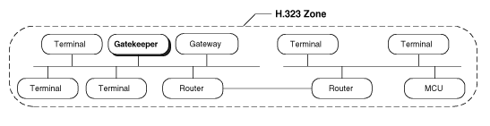
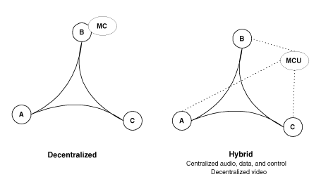

Переводил для себя :)
Рекомендация H.323 описывает технические требования для услуг по передачи аудио и видео по сетям не гарантирующим качество сервиса. H.323 ссылается на спецификацию T.120 для передачи данных. В область рассмотрения H.323 не входят сами сети или транспортный уровень, который может быть использован для соединения множества сетей. H.323 рассматривает только Switched Circuit Network (SCN). На этом рисунке показана система H.323 с её компонентами.
H.323 определяет четыре основных компонента для сетевых систем коммуникаций:

Терминалы являются клиентскими конечными устройствами в сетях, которые предоставляют двунаправленную связь в реальном времени. Рисунок описывает компоненты терминала. Все терминалы должны поддерживать передачу голоса и, опционально, передачу видео и данных. H.323 определяет режимы работы для взаимодействия различных типов терминалов. Он является основным стандартом для следующего поколения IP телефонов, терминалов аудиоконференций и технологий видоконференций.
Все H.323 терминалы должны поддерживать:Шлюз является необязательным элементом в H.323 соединении. Шлюзы предоставляют много услуг, в основном услугу преобразования между конечными устройствами H.323 и терминалами других типов. Эта функция включает в себя преобразование между форматами передачи (т.е., H.225 в H.221) и между процедурами соединения (т.е., H.245 в H.242). Дополнительно к этому, шлюзы могут выполнять преобразования между аудио|видео кодеками, настройку и прекращение соединения на обоих концах линии (LAN или SCN). Рисунок даёт представление о шлюзе.

В общем случае, целью шлюза является отражение характеристик конечного LAN устройства на конечное SCN устройство и наоборот. Основное назначение шлюза:
Шлюзы не нужны, если отсутствует необходимость в соединенях с другими сетями, так как конечные устройства могут взаимодействовать напрямую в пределах одной сети. Терминалы взаимодействуют с шлюзом по протоколам H.245 и Q.931.
С применением соответствующих транскодеров, H.323 терминалы могут поддерживать H.310-, H.321-, H.322- и V.70-совместимые терминалы.
Множество функций шлюза "брошены" на разработчика. Например, действительное количество H.323 терминалов, которые могут работать через шлюз не являются предметом стандартизации. Аналогично, количество SCN соединений, количество поддерживаемых одновременных независимых соединений, функции преобразования аудио|видео|данных и реализация функций многоточечных соединений оставлено на разработчике шлюза. Включив технологию шлюза в спецификацию H.323, ITU позиционировала H.323 как основу, которая объединяет стандартные конечные устройства.
Контроллёр зоны является основным компонентом H.323 сети. Он обрабатывает все соединения своей зоны и предоставляет услуги по управлению соединениями зарегистрированных конечных устройств. Во многих случаях, контроллёр зоны работает как виртуальный коммутатор.

Контроллёр зоны выполняет две важные функции управления соединениями. Первая — преобразование адресов (сетевые псевдонимы для терминалов и шлюзов в IP или IPX адреса), как указано в спецификации RAS. Вторая — управление полосой пропускания, которое также описано в спецификации RAS. Например, если администратор ограничил количество одновременных соединений по сети, контроллёр зоны может отклонять попытки установить дополнительные соединения. Таким образом, остальная полоса пропускания отдается для электронной почты, передачи файлов и для других сетевых протоколов. Коллекция из терминалов, шлюзов и сервера управления конференциями называется H.323 зоной.
Опциональной, но значимой характеристикой контроллёра зоны является возможность маршрутизации H.323 соединений. Маршрутизиция соединений через контроллёр зоны даёт больший контроль над ними. Данная возможность нужна поставщикам услуг для организации биллинга соединений проходящих через их сеть. Также это позволяет переключить соединение на другое конечное устройство, если оригинальное недоступно. Контроллёр зоны, поддерживающий маршрутизацию H.323, поможет при балансировании нагрузки между несколькими шлюзами.
Так как контроллёр зоны логически разделён с конечными устройствами, производители могут встраивать его функциональность в физическую реализацию шлюзов и сервера управления конференциями.
Контроллёр зоны не является обязательным элементом H.323 системы. Тем не менее, при его наличии терминалы должны использовать предоставляемые им услуги. Спецификация RAS определяет их как: преобразование адресов, управление доступом, управление полосой пропускания и управление зоной.
Контроллёр зоны также может участвовать в многоточечных конференциях. Для этого пользователи должны использовать контроллёр зоны для работы с H.245 сигнализацией. При переключении соединения типа "точка-точка" в многоточечный режим, контроллёр зоны может перенаправлять H.245 сигнализацию на сервер управления конференциями (MC). Обратите внимание на то, что контроллёр зоны не обрабатывает H.245 сигнализацию, он просто передаёт её между терминалами и сервером управления конференциями.
Сеть с шлюзом может также использовать контроллёр зоны для преобразования входящие E.164 адреса в транспортные.
Список обязательных функций:
Сервер MCU поддерживают соединения между тремя и более конечными устройствами. По спецификации H.323 сервер MCU состоит из непосредственно контроллёра (MC) и нуля или большего количества процессоров соединений (MP). MC обеспечивает H.245 согласование между всеми терминалами для определения общих характеристик обработки аудио|видео сигналов. MC также управляет ресурсами соединения, определяя, какой аудио и видео поток, если таковой имеется, будет многоточечным.
MC напрямую не взаимодействует ни с какими медиа потоками. Этим занимается MP, который смешивает, переключает и обрабатывает потоки аудио|видео|данных. MC и MP характеристики могут сосуществовать в отдельном компоненте или быть частью какого-нибудь H.323 компонента.

